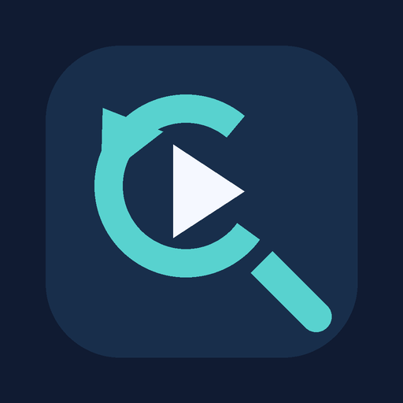

DRAFT — NOT PUBLISHED
ReveriTrace
Rediscover videos and music from your own authorized history exports.
Find previously watched YouTube videos and YouTube Music tracks by date, repetition and multilingual title clues. No direct Google OAuth is included; sign in through Google and provide a history-only export or use a supported authorized connector. Local semantic search requires compatible execution.
Independent tool, not affiliated with Google or YouTube.
Publisher: [INSERT VERIFIED PUBLISHER BEFORE PUBLISHING]
Software license
The original software is offered under GNU AGPL v3.0. Its license governs software rights; these website terms do not restrict rights granted by AGPL. Commercial use complying with AGPL is permitted. Third-party services and models retain their own terms. Contributions are encouraged, not mandatory.